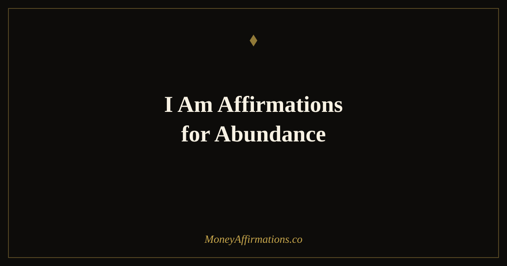

50 I Am Affirmations for Abundance to Claim Your Wealthy Identity

Two words carry more transformational weight than any other combination in the English language: "I am." Whatever follows them, you are telling your brain — and on some level, the world — that this is your nature. Not your goal. Not your wish. Your identity. This matters enormously for abundance work, because most people approach prosperity as something outside themselves, something to attract or earn or stumble into. "I am" affirmations relocate abundance to where it actually lives: inside your self-concept. These 50 affirmations are grouped into five identity layers — openness, creation, worthiness, alignment, and gratitude — each one building on the last. Work through them in order if you are new to this practice, or read all five groups and notice which one provokes the most emotional charge. That charge is your compass.
What are I am affirmations for abundance?
"I am" affirmations for abundance are identity declarations — statements that begin with the two words "I am" and assert a specific quality, state, or truth about who you are in relation to prosperity, wealth, and receiving. They differ from general abundance affirmations in one critical way: they do not express desire or intention. They assert identity.
The distinction is subtle but neurologically significant. "I attract abundance" is a behavioral statement — it describes what you do. "I am abundant" is an ontological statement — it describes what you are. Research on self-concept theory suggests that the brain works to maintain consistency between identity beliefs and behavior. Once "I am abundant" is a genuine part of how you see yourself, scarcity-reinforcing behaviors begin to feel out of character rather than normal.
These affirmations are particularly effective for people who feel like they are "trying" to be wealthy rather than simply being it — a distinction that makes all the difference in lived experience and financial outcomes.
50 I am affirmations for abundance
Every affirmation on this page begins with "I am" — the two most powerful words in the English language for identity change. Read them slowly. Let each one land.
I am open to receiving
- I am open to receiving abundance in all the forms it chooses to arrive.
- I am allowing prosperity to flow into my life freely and fully.
- I am a willing and grateful receiver of wealth, opportunities, and blessings.
- I am releasing every old belief that told me I did not deserve abundance.
- I am open to unexpected income, unexpected gifts, and unexpected upgrades in my life.
- I am a clear and unobstructed channel for financial abundance.
- I am comfortable receiving large sums of money with ease and gratitude.
- I am no longer blocking abundance with doubt — I am letting it in.
- I am open to receiving more than I have ever had before, starting right now.
- I am allowing life to be generous with me, because I am generous with life.
I am a creator of abundance
- I am a creator of real value and my income reflects that value.
- I am actively building prosperity through the work I do and the gifts I share.
- I am someone whose ideas, skills, and energy generate wealth in the world.
- I am a powerful co-creator of the abundant life I envision.
- I am generating abundance through my creativity, consistency, and courage.
- I am the source of my own prosperity and that source is limitless.
- I am contributing something meaningful to the world and I am richly compensated for it.
- I am building financial abundance with every intentional action I take today.
- I am someone who creates more value than I consume, and wealth flows naturally to me.
- I am a generator of prosperity who sees opportunity where others see obstacles.
I am worthy of prosperity
- I am worthy of a deeply abundant and financially free life — not someday, but now.
- I am deserving of wealth simply because I exist and contribute to this world.
- I am enough, I have enough, and I am worthy of more than enough.
- I am releasing the belief that suffering or struggle are required to earn prosperity.
- I am worthy of a life where money is never a source of anxiety or fear.
- I am a person whose financial needs and desires matter and deserve to be met.
- I am worthy of wealth that feels easy, joyful, and aligned with who I am.
- I am no longer shrinking myself financially to fit someone else's idea of what I deserve.
- I am fully worthy of every abundant experience, relationship, and resource available to me.
- I am someone who receives wealth graciously because I know I deserve it.
I am aligned with abundance
- I am in complete alignment with the frequency of abundance and prosperity.
- I am flowing with wealth rather than pushing against it.
- I am tuned to the vibration of receiving, and money responds to that frequency.
- I am at peace with having money, keeping money, and growing money.
- I am aligned with a universe that is inherently generous and abundant.
- I am trusting the flow of prosperity even when I cannot see every step ahead.
- I am in harmony with money — it comes to me, stays with me, and grows with me.
- I am someone whose thoughts, feelings, and actions all point toward abundance.
- I am living in alignment with my highest financial potential every single day.
- I am at ease with wealth because abundance is my natural state.
I am overflowing with gratitude and wealth
- I am overflowing with gratitude for every form of abundance in my life right now.
- I am wealthy in money, in love, in opportunity, and in purpose.
- I am thankful for the financial resources I have and magnetic to even more.
- I am living proof that an abundant mindset creates an abundant life.
- I am filled with appreciation for the prosperity that surrounds me in all directions.
- I am grateful for every dollar I have ever earned, saved, or received as a gift.
- I am someone whose gratitude multiplies the abundance already flowing to me.
- I am full — financially, emotionally, and energetically — and I have more than enough to share.
- I am a living example of what happens when you stop chasing abundance and start being it.
- I am abundant, I am wealthy, I am free — and this is who I truly am.
How to use these affirmations
The single most important thing you can do with "I am" affirmations is slow down. Most people rush through affirmations like a to-do list, checking them off rather than letting them land. The identity shift only happens when you pause after each statement and ask: what would it actually feel like if this were completely, undeniably true?
Start with the group that creates the most resistance. If "I am worthy of prosperity" feels hollow or false, that is the group to spend the most time in. Resistance is information — it shows you exactly which identity layer needs the most work. Spend a full week with just that group, reading it morning and evening, before moving on.
Write your most charged affirmation — the one that feels truest and most electric — on a physical index card and carry it with you. Read it at moments of financial decision-making: before a purchase, before a negotiation, before you open your banking app. The consistency of context reinforces the neural pathway faster than random repetition.
For an even deeper exploration of identity-based wealth affirmations, the I am wealthy affirmation guide pairs naturally with this practice — together they cover both the abundance identity and the specific wealth identity that supports long-term financial transformation.
Why "I am" is the most powerful phrase for abundance — identity science explained
Carl Rogers, the founder of humanistic psychology, identified self-concept as the central organising principle of human behavior. We do not act according to who we want to be — we act according to who we believe we are. When someone's behavior contradicts their self-concept, the brain experiences cognitive dissonance and works to restore consistency. This is why lasting behavioral change requires an identity change first.
The phrase "I am" is the linguistic gateway to self-concept. Neuroscience research shows that first-person identity statements activate the medial prefrontal cortex and the default mode network — the brain regions responsible for self-referential processing. Statements about the self are processed differently, and more deeply, than statements about the world or about other people. When you say "I am abundant," your brain registers it as a fact about you, not an observation about external reality.
This is what separates "I am" affirmations from "I have" or "I attract" statements. In his work on identity-based habits, James Clear notes that the most durable changes in behavior come from people who shift their identity first: instead of "I am trying to save money," the change happens faster and sticks longer when the person says "I am a saver." The same principle applies to abundance — "I am attracting abundance" is a process statement; "I am abundant" is an identity statement, and the brain treats them very differently.
Research on neuroplasticity confirms that neural pathways are shaped by repetition regardless of initial belief. You do not need to feel abundant to begin building the neural architecture of an abundant identity. Repeated, emotionally engaged "I am" statements literally reshape the brain over time — a process that typically takes four to eight weeks of consistent practice before the new identity begins to feel genuinely true.
Tips to make them work faster
- Feel it, don't just say it: After each "I am" statement, pause and generate the physical feeling of that state being true — where does it live in your body? Affirmations paired with emotion encode far faster in the brain than affirmations read mechanically.
- Pick the most uncomfortable one: The affirmation that provokes the most skepticism or discomfort is the one with the most transformational potential. Start there every day, not last.
- Mirror work: Say your top five affirmations while looking at yourself in a mirror. The self-referential neural activation is amplified when you are literally making eye contact with yourself as you speak the identity statements.
- Stack with evidence: After each affirmation, immediately name one piece of evidence — however small — that it could be true. "I am abundant... and I have a roof over my head, food in my kitchen, and skills people pay me for." Evidence-stacking bridges the gap between aspiration and belief.
- Record your voice: Record yourself reading all 50 affirmations calmly and confidently. Listen back during commutes or before sleep. Hearing your own voice making identity declarations is neurologically distinct from reading them silently — and distinctly more powerful.
Frequently asked questions
What is the difference between I am affirmations and regular affirmations?
Regular affirmations describe desires or intentions — "I attract money," "I am grateful for abundance." I am affirmations declare identity — who you are, not what you want. This is a meaningful neurological difference. Identity statements activate self-concept in the brain's default mode network, which governs how you see yourself and interpret experiences. When you say "I am abundant," you are not expressing a wish; you are asserting a fact about your nature. Over time, the brain works to make your behavior consistent with that stated identity, which is what produces lasting change.
How many I am affirmations should I say each day?
Quality matters far more than quantity. Three to five affirmations repeated slowly and intentionally — pausing to feel each one — will do more than rushing through all fifty. Choose the affirmations that feel most charged, either because they resonate deeply or because they feel slightly uncomfortable. Both are signs the statement is doing useful work. Daily practice of even five minutes, done with full presence and emotional engagement, creates more neurological change than a rushed 20-minute session.
Do I am affirmations work if I do not believe them yet?
Yes — and the disbelief is actually part of the process. The brain does not require that you believe an affirmation for it to begin creating new neural pathways. Research on neuroplasticity shows that repeated thought patterns physically reshape neural connections regardless of whether they feel true initially. The trick is to say "I am abundant" not as a lie you are trying to believe, but as a future identity you are actively installing. Think of it as rehearsal for who you are becoming, not a claim about who you already are. The feeling of truth follows the practice — it does not need to precede it.
These 50 "I am" affirmations are a complete abundance identity practice on their own — but they work best when supported by the right environment, content, and community. Explore the full abundance affirmations collection for deeper practices, longer lists, and the mindset tools that bring every "I am" statement to life.